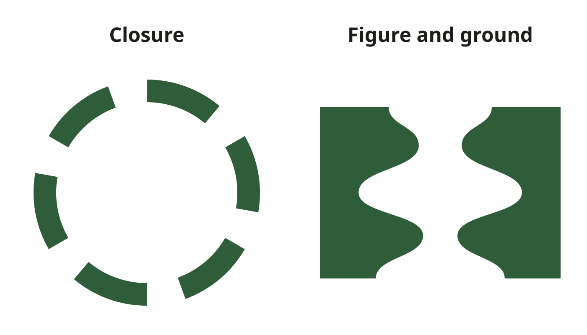
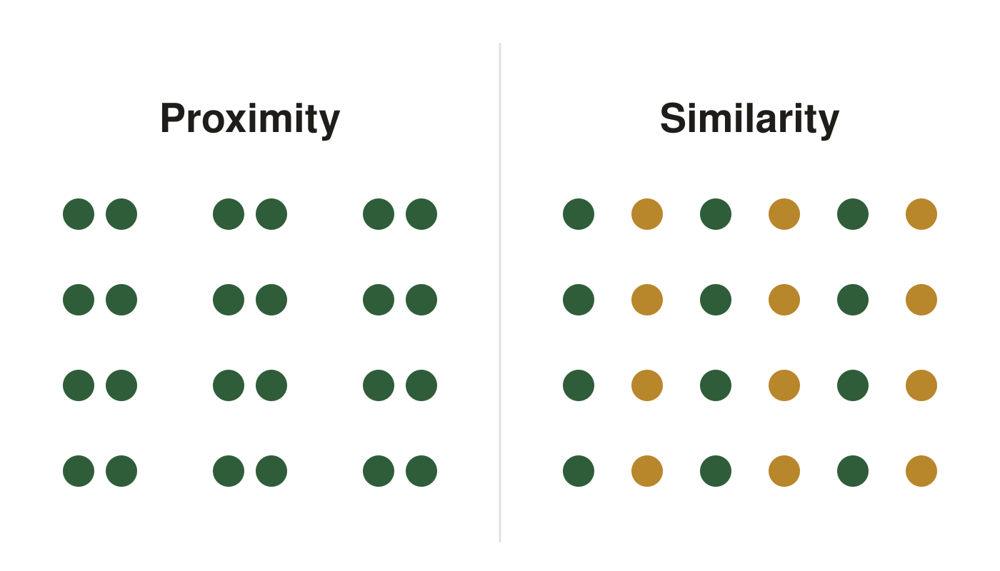
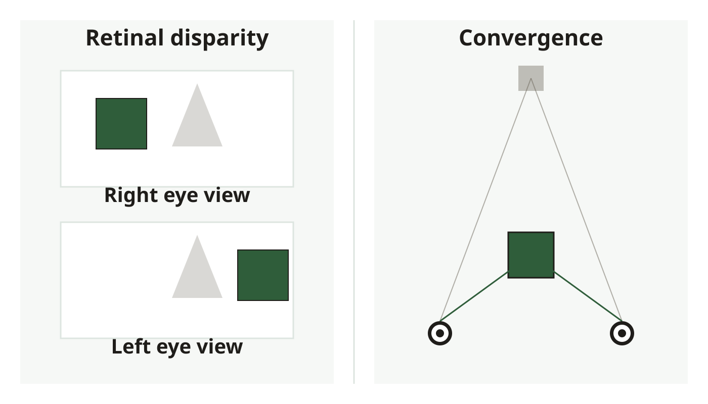
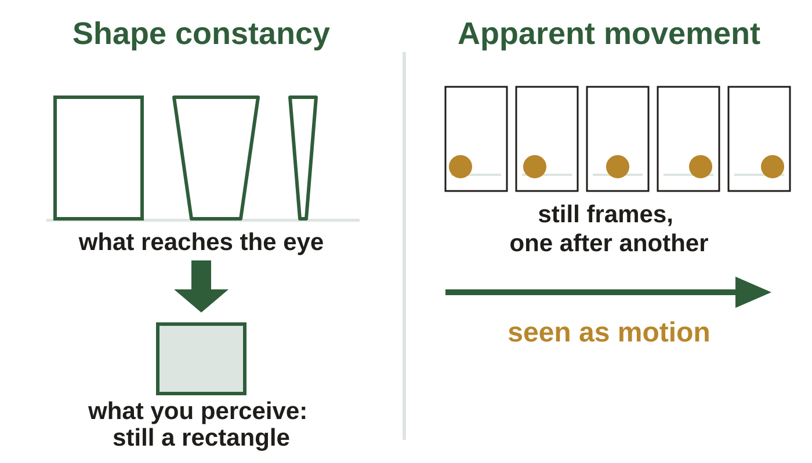

Perception. These are the same figures as in your Class Notes, in the same order. If a figure in your notes shows as a gray box, use this page instead.
Slide 23. Gestalt: Seeing Wholes

Left, the eye closes the gaps. Right, one image, two readings.
Slide 24. Gestalt: How Groups Form

Left, spacing alone groups them. Right, color alone groups them.
Slide 25. Two Eyes, One Depth System

Left, two eyes, two slightly different images. Right, the eyes turn inward for a near object.
Slide 27. One Road, Four Cues
Interposition is only incidental here. OpenStax, Psychology 2e, Figure 5.17, CC BY 4.0; credit: Marc Dalmulder
Slide 28. Constancy and Apparent Movement

Left, one door at three swing angles, still perceived as a rectangle. Right, still frames read as motion.
Slide 31. What Am I Looking At
The Muller-Lyer figure. Phlsph7, Wikimedia Commons, CC0